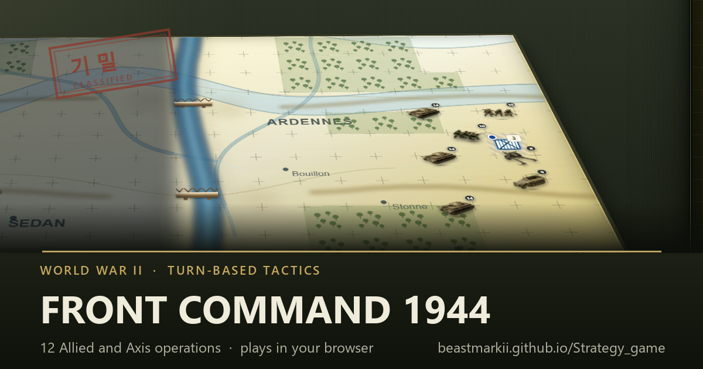

Front Command 1944
World War II turn-based tactics

Twelve operations from the Second World War, playable from either side. You move your units, keep your supply lines open, and hold the objective long enough to win. Cut a unit off from its headquarters and it stops being reinforced; leave your own rear open and the same happens to you.
- 12 operations — Normandy, El Alamein, Bagration, Imphal and more
- Play the Allied or the Axis side of each one
- Three difficulties, autosave, and a full balance editor
- Runs in the browser on phone or desktop — no download, no sign-up